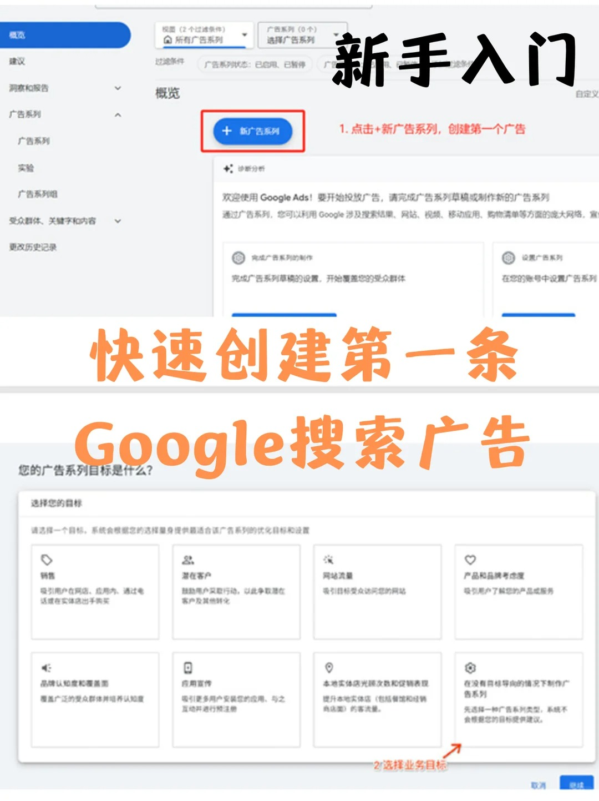
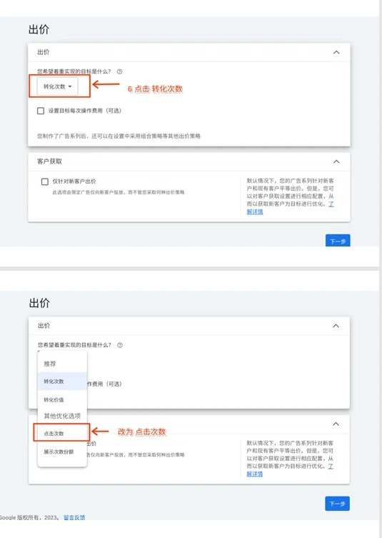
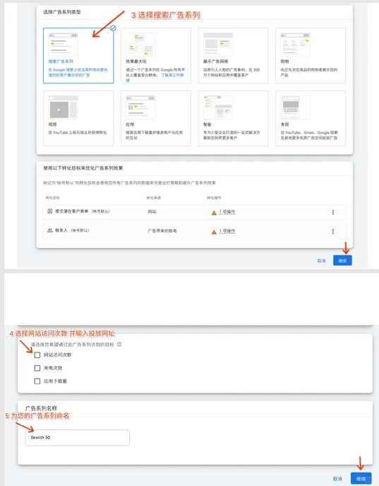
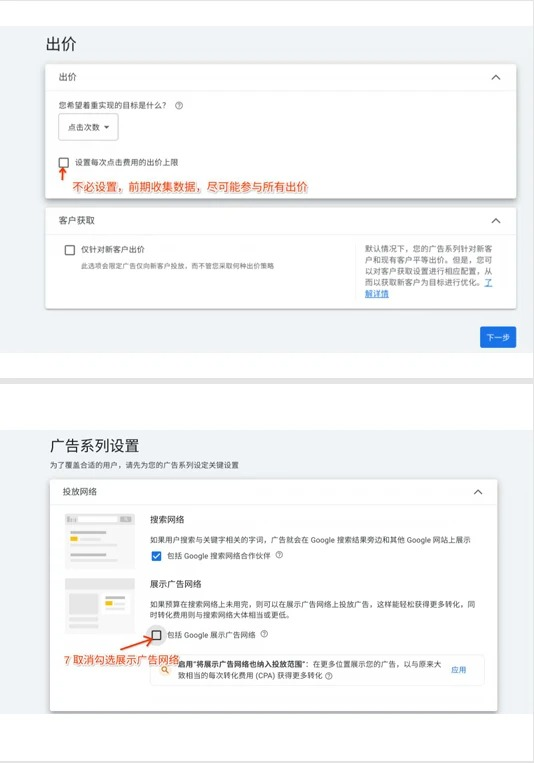
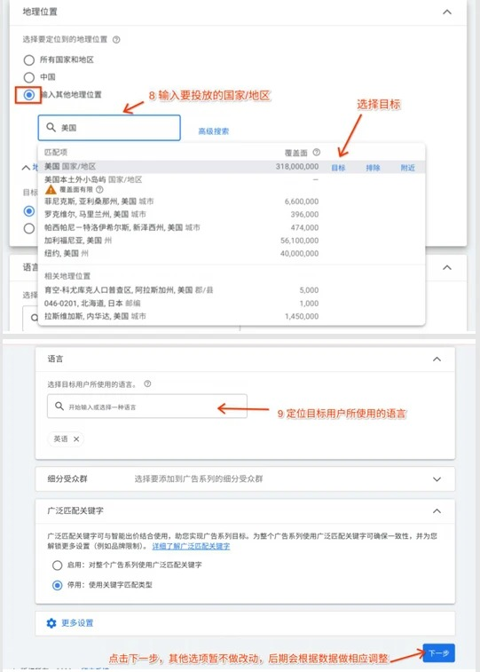
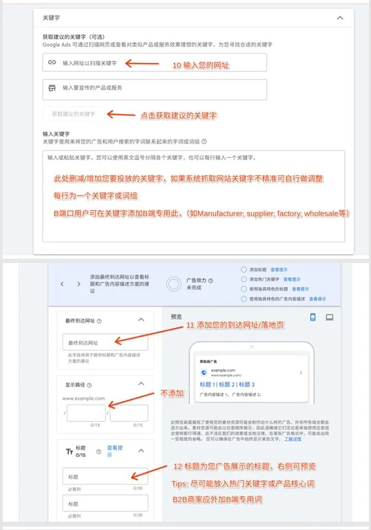
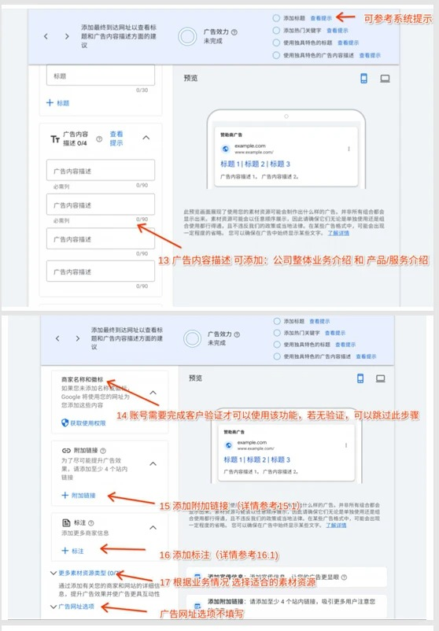
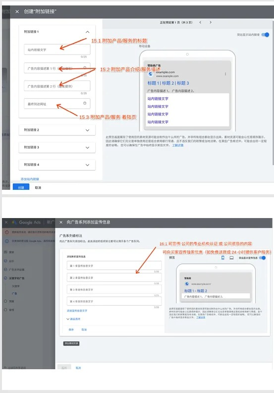
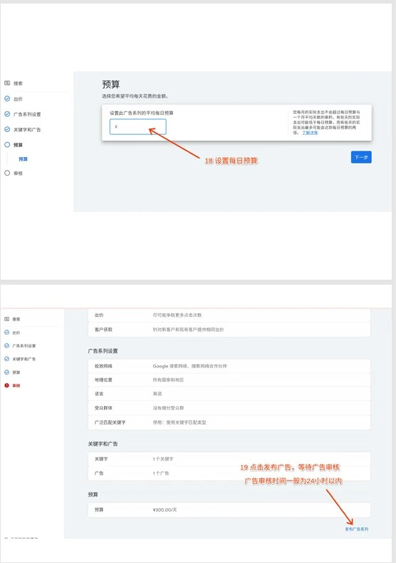

新手入門 · 搜索廣告 · B2B
從開戶後的準備工作開始，按步驟創建第一條Google搜索廣告。本文結合投稿操作截圖，幫助外貿B端新手梳理完整投放流程。
閱讀提醒：截圖是歷史界面示例，後臺選項可能不同。出價、網絡與預算應結合業務和數據選擇，不承諾排名或轉化效果。

開始前：準備B端關鍵詞與轉化追蹤
給大家分享下，作爲新手可以怎樣創建第一條谷歌搜索廣告。開通Google Ads賬戶後，先準備目標市場、產品落地頁、B端關鍵詞，以及能夠正常記錄的詢盤或訂單轉化。
如果還未開戶，可先閱讀谷歌Ads開戶常見問題。教程以外貿B2B搜索廣告爲例，不代表所有業務都應使用相同設置。
步驟1–5：創建系列、選擇目標與命名
- 在Google Ads後臺點擊“+創建”，選擇新廣告系列。
- 選擇“潛在客戶”或“在沒有目標指導的情況下創建廣告系列”，按提示繼續。
- 選擇“搜索”廣告系列，承接用戶主動搜索產品或服務的需求。
- 按實際需求選擇網站訪問、來電或潛在客戶等方式。某些步驟可暫不填網址，但最終廣告必須配置有效的最終到達網址。
- 給系列命名。例如“01-Search-Packaging-US”，用編號、投放類別、產品與市場方便管理；這是命名建議，不是國際強制標準。

步驟6：選擇出價方式
“儘可能爭取更多點擊次數”側重獲取點擊，“儘可能提高轉化次數”側重已配置的轉化目標。點擊不必然低質，轉化出價也不保證詢盤增加：關鍵詞意圖、落地頁與追蹤準確性同樣關鍵。
新手應先檢查轉化動作是否真實有效，再根據業務目標和數據情況選擇策略。沒有足夠依據時，不要隨意填寫目標CPA；是否使用目標值，應結合可接受的獲客成本與歷史表現，而不是照搬他人的數字。

步驟7：檢查投放網絡
如果希望第一輪集中觀察Google搜索流量，可分別檢查搜索合作伙伴與展示網絡選項。是否啓用，應根據業務目標和分網絡效果判斷，不能認定這些網絡必然不精準。
注意：搜索合作伙伴並不等於Google搜索本身；創建搜索系列時，不是把核心Google搜索流量取消。配圖展示的是當時界面，選項可能變化。

步驟8–9：設置國家、地區與語言
輸入準備服務的國家或地區，再按實際業務排除不服務的市場。面向全球，不等於必須選擇所有國家；可以先圍繞明確市場建立可比較的測試。
區域排除不能識別所有“同行”。還要檢查地理位置高級選項，區分實際身處目標地區與對該地區感興趣的用戶。
語言根據客戶能理解的廣告與落地頁內容設置。英語可結合目標市場語言，但廣告、落地頁和客服應能承接對應語言；不要僅因爲投放某國就盲目添加所有語言。

步驟10–11：關鍵詞與落地頁
關鍵詞幫助決定廣告可參與哪些相關搜索。提前按產品和意圖分類，B端業務可研究manufacturer、supplier、factory、wholesale等詞，但不是加上這些詞就一定獲得B端客戶。
結合匹配方式、搜索詞報告與否定關鍵詞減少不相關流量，不要只依賴系統推薦。一個廣告組儘量圍繞清晰主題組織。
最終到達網址應指向與關鍵詞和廣告承諾一致的頁面。專門落地頁往往更容易控制體驗；首頁或分類頁也可以使用，前提是相關、可訪問、信息完整並能方便提交詢盤。

步驟12–13：填寫廣告標題與描述
響應式搜索廣告通常至少提供3個標題、2條描述，最多15個標題、4條描述。標題每條上限30字符，描述每條上限90字符；中文等雙寬字符按2個字符計算，以後臺計數爲準。
標題可結合核心產品詞、B端服務、真實優勢與行動提示。不要機械重複關鍵詞或誇大承諾；填滿也不等於效果一定更好。標題和描述會組合展示，前三個輸入項不保證按固定順序出現。
保持“搜索意圖—廣告文案—落地頁產品”一致，描述補充服務、交付條件或可信優勢，避免只有泛泛的公司介紹。

步驟14：添加附加鏈接、標註與商家信息
附加鏈接可指向產品、案例、服務或聯繫頁面；每條鏈接應該有清楚的目的，並與用戶需求相關。標註可寫真實賣點，例如支持定製、服務時間或配送條件。
鏈接文字與標註常見上限爲25字符，其他字段各有要求；中文等字符計數以後臺爲準。電話、商家名稱與徽標須滿足相應資格和驗證要求，不要填寫不真實的信息。

步驟15：設置預算、檢查並提交
按自己的測試能力、目標市場和可接受成本設置預算，系統推薦只是參考。預算不是廣告排名開關，預算更高不保證排第一；排名還與出價、廣告和落地頁質量、競爭及搜索情境等因素有關。
使用平均每日預算時，每日實際費用可能波動，不應理解爲每天精確花同一金額。提交前檢查國家、語言、網絡、關鍵詞、網址、文案、轉化目標與付款設置。
提交後等待審覈。審覈通過不等於立刻有展示或轉化，還需滿足付款、資格和投放條件；處理時間以賬戶實際狀態爲準。

上線後：先看有效詢盤，再優化
第一條廣告上線只是開始。檢查追蹤是否正常，再結合搜索詞、費用、有效詢盤、訂單價值和轉化延遲判斷效果，避免頻繁同時改動所有設置。
繼續閱讀Google Ads自投圖文教程與2026基準解讀。需要執行支持，可查看谷歌廣告代投服務；廣告展示位置與谷歌SEO自然排名屬於不同體系。
希望這篇內容能幫你少走彎路。你的認可是我持續分享和創作的動力。